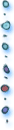
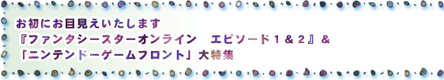
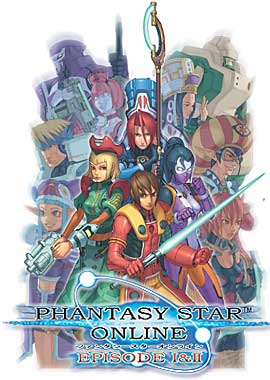
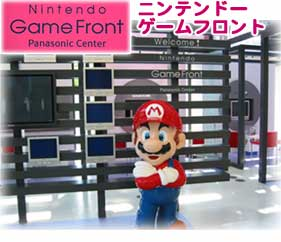
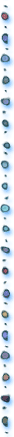

今月号のＮ．Ｏ．Ｍは、ゲームキューブ初のオンラインゲームとなる『ファンタシースターオンライン エピソード１＆２』と、これまた任天堂初のゲーム常設展示場となる「ニンテンドーゲームフロント」の２大特集です。全世界のプレイヤーと遊べる『ファンタシースターオンライン』は、Ｎ．Ｏ．Ｍイチオシのソフト。

また、「ニンテンドーゲームフロント」では、パナソニックの高解像度モニターで、任天堂のゲームを体験することができます。この秋も任天堂ファンのゲームライフは、バッチリ充実しそう！

１．『ファンタシースターオンライン』とは
２．あなたもハンターズデビュー！ ネットワークに接続してみよう
３．編集長のオンラインゲーム体験記
４．『ファンタシースターオンライン エピソード１＆２』開発スタッフインタビュー
株式会社ソニックチーム 中 裕司さん・畑 信太郎さん
１．オープン直前！ ニンテンドーゲームフロント潜入ルポ
JUMP >>>
9月号のサイトマップへ
BACK >>>
N.O.Mのバックナンバーページへ